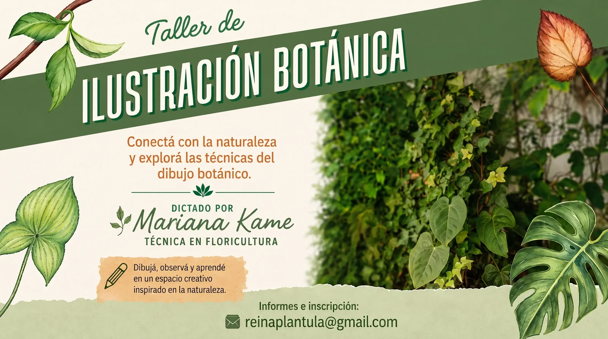

WORKSHOPUn encuentro de tres horas para conectar con la naturaleza y explorar las técnicas del dibujo botánico, en el jardín y la sala taller de Arcos V.
No hace falta experiencia previa: la propuesta es observar, dibujar y aprender a mirar las plantas con otro detalle, acompañada paso a paso por Mariana Kame, técnica en floricultura.
Durante el taller vas a trabajar:
Cupos limitados.
Las consultas e inscripciones las gestiona directamente Mariana.
Consultar por WhatsApp